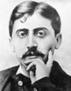

Romancı Marcel Proust’un (1871–1922) en ünlü pasajlarından biri, bir parça kekin kendisine çağrıştırdığı anılardan bahseder. Kekin tadı, In Search of Lost Time’ın (Kayıp Zamanın İzinde) yetişkin anlatıcısını halasıyla birlikte sık sık kek yediği mutlu çocukluk günlerine götürür.

Kafasından geçen anılar, anlatıcıyı –tanıdık gelen bir koku veya bir kekin tadı gibi- küçük ve sıradan duyumların en önemli anılarımızı çağrıştırma gücü üzerinde düşünmeye iter: “Şeylerin tadı ve kokusu uzun süre üzeri örtülü kalır. Diğer duyumlar arasında bize bir şeyleri hatırlatmak için zamanlarının gelmesini umutla beklerler. Küçük ve ele avuca gelmez doğalarıyla, anıların büyük bölümünü onlar omuzlamışlardır.” Bu pasaj Proust’un yapıtındaki temel temalardan birini açıklamaktadır: belleğin geniş yapısı ve anıların insan bilincinde oynadığı rol. Eser yedi cilt ve 3 bin sayfadan oluşmaktadır.
20. yy dünya edebiyatının en önemli isimlerinden olan Marcel Proust, Paris’in dış mahallelerinden Auteuilde’de doğdu. Gençliğinin büyük bölümünü İlliers köyünde geçirdi. Kayıp Zamanın İzinde’de anlatılan kurgusal Combray kasabası, çocukluğunun geçtiği bu iki yerin bir karışımıydı. Çocukken sık sık sağlık problemleri geçirdi. Buna rağmen Fransız ordusunda bir yıl görev yaptı. Yetişkinliğinde de sık sık hastalanmaya devam etti. Genellikle geceleri çalışıyor ve gündüzleri uyuyordu. Konsantre olabilmek için sessiz bir odaya kapanıp çalışıyordu.
Kayıp Zamanın İzinde kapsam ve konu olarak çok geniştir. Birkaç on yıllık bir dönemi anlatır. Fransız-Prusya Savaşı ve I. Dünya Savaşı arasında geçen zaman diliminde Fransa’da önemli teknolojik ve sosyal değişimler yaşanmıştır. Romanda yüzlerce karakter vardır ve olay örgüsü isimsiz anlatıcının etrafında gelişir. Anlatıcı aslında Proust’un öteki kişiliğidir. Kitap açık bir biçimde eşcinselliği ele alan ilk eserlerden biridir (Proust eşcinsel olduğunu gizlemiyordu). Estetik, müzik ve felsefe temalarına temas eder.
Kitabın tamamlaması için harcadığı çabalar, Proust’un sağlığına mal oldu. Elli bir yaşında zatürreden öldü. Kitabın son ciltleri ölümünden sonra basılmıştır. Tüm seri ancak 1927 yılında tamamlanabildi.
Ek Bilgiler
1- Proust, İngiliz deneme yazarı John Ruskin’in (1819–1900) bir hayranıydı. Onun iki kitabını Fransızca’ya çevirmişti.
2- Orjinal adı “À la recherche du temps perd” olan kitabı İngilizce’ye iki şekilde çevrilmiştir: “In Search of Lost Time” ve “Remembrance of Things Past” (Geçmişte Kalanları Hatırlamak).
3- Kayıp Zamanın İzinde’de 1.250 binden fazla kelime bulunmaktadır.